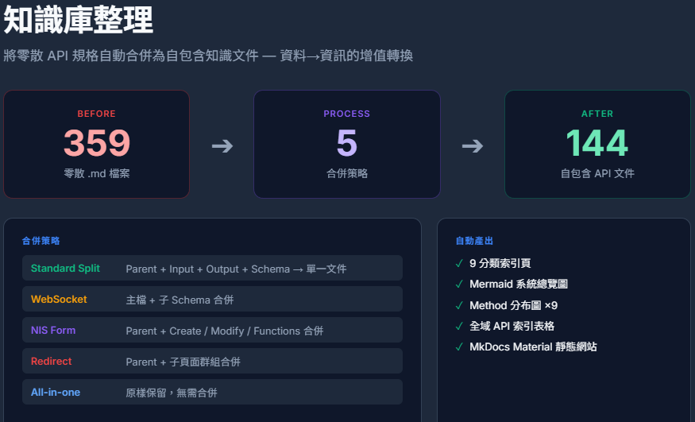

COST ANALYSIS
效率提升 100+ 倍
基於 500+ 頁面的真實專案數據。自動化將數週的苦工縮短為一杯咖啡的時間，並可重複執行無數次(你絕不會再想用人工做一次的)。
129hr
VS
1hr
| 比較項目 | 人工手動 | 自動化工具 |
|---|---|---|
| 自動爬取與備份 | 34 hr | < 30 min |
| 知識庫整理 (Re-structure) | 52 hr | 一鍵完成 |
| Confluence/Web 自動上傳 | 43 hr | < 30 min |
| 總計工時 | 129 hr | ~ 1 hr (人工介入 1 分鐘) |
* 估算基準：人工爬取並存下一頁 4 分鐘；人工建立 Confluence Page 約 5 分鐘。
WHY IT MATTERS
為什麼你需要「知識逃生艙」？
手動搬運 500+ 頁面是不可能的任務，而自動化工具卻能輕鬆完成。
結構完整重現
Notion 的無限層級是雙面刃。人工匯出並還原結構是極其繁瑣又容易出錯的任務，而我們能完美復刻原始的層級關係。
API 文件縫合
將分散在不同頁面的 Request/Response 範例，自動識別並縫合為單一的 Markdown 文件 (Single Source of Truth)，不僅爬取，還做到優化，直擊痛點。
企業級架構
符合企業對知識資產管理的要求。不依賴第三方雲端，將資料掌控權完全握在自己手中。
THE ALCHEMY
Data to Information.
Data to Information.
煉金術般的價值躍升。
-
Snapshot 快照擷取原始數據，建立本地 Checkpoint，支援斷點續傳。
-
Structure 解析頁面屬性，重組為 9 大功能模組，生成語意化導覽樹。
-
Site Gen 一鍵生成 MkDocs 靜態網站，具備全文搜索與 Mermaid圖表支援。
-
Confluence Sync 自動化上傳管道 (Pipeline)，支援 Mermaid 圖表轉換、內部連結修復與頁面衝突處理。
